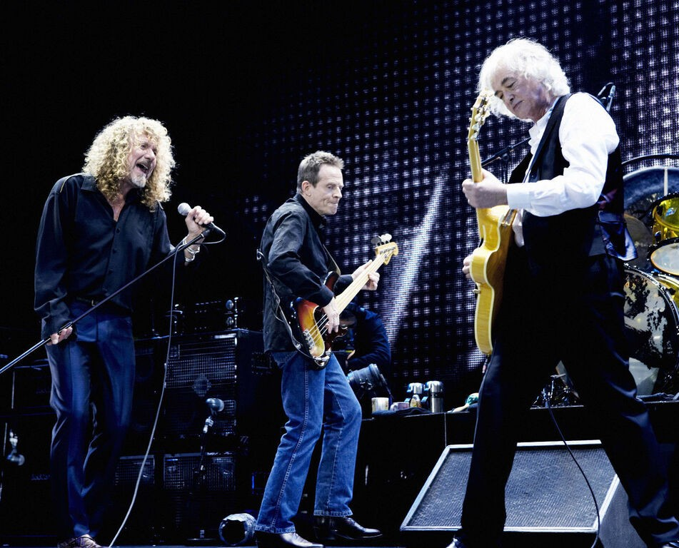
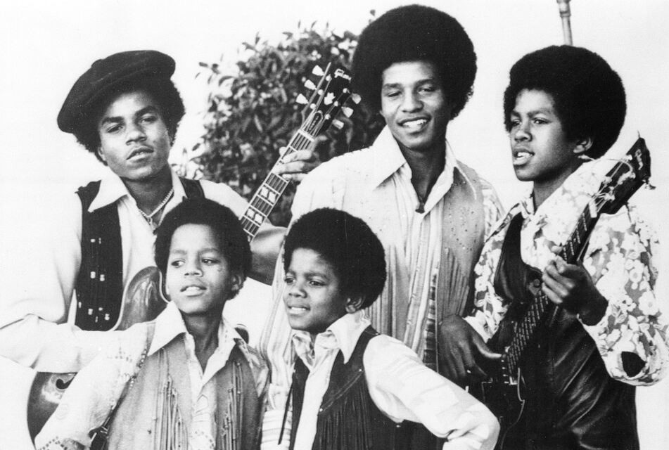
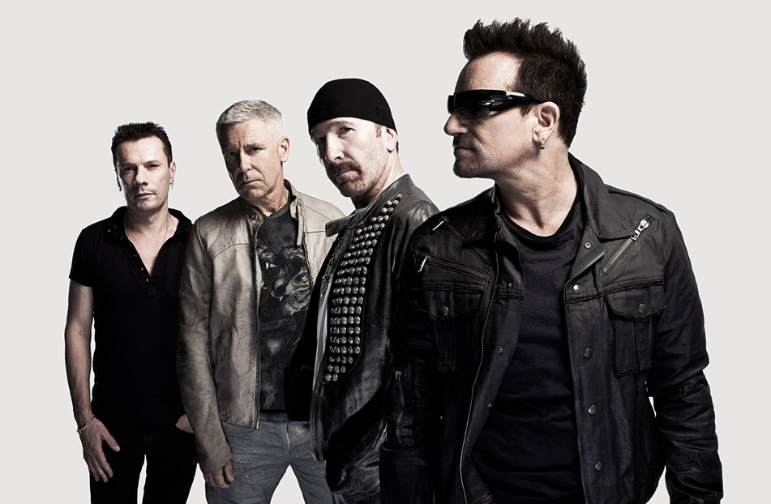

Led Zeppelin
Led Zeppelin var ett brittiskt rockband som bildades i slutet av 1960-talet och blev en av de mest inflytelserika grupperna inom hårdrock och bluesrock. Bandet bestod av Robert Plant (sång), Jimmy Page (gitarr), John Paul Jones (bas/keyboard) och John Bonham (trummor). De slog igenom med låtar som “Stairway to Heaven” och var kända för sin kraftfulla ljudbild, tekniska skicklighet och inflytande på rockmusiken. Bandet upplöstes 1980 efter att John Bonham avled, men deras musik fortsätter att inspirera artister världen över.

Jackson 5
The Jackson 5 var en amerikansk familjegrupp som slog igenom i slutet av 1960-talet med en energisk mix av pop, soul och funk. Gruppen bestod bland annat av bröderna Michael Jackson, Jackie Jackson, Tito Jackson, Jermaine Jackson och Marlon Jackson. De blev snabbt stora genom Motown och fick flera hits som “I Want You Back” och “ABC”. Gruppen var känd för sina tighta harmonier, koreograferade danssteg och unga Michael Jacksons starka scennärvaro. Senare gick medlemmarna vidare till egna karriärer, där Michael Jackson blev en av världens största soloartister.

U2
U2 är ett irländskt rockband som bildades på 1970-talet och blev ett av världens mest framgångsrika band. Gruppen består av Bono (sång), The Edge (gitarr), Adam Clayton (bas) och Larry Mullen Jr. (trummor). De är kända för sin anthemiska rock, känsloladdade texter och stora liveframträdanden, med hits som “With or Without You” och “One”. Under sin karriär har de kombinerat musik med politiskt och socialt engagemang och fortsatt vara relevanta över flera decennier.
